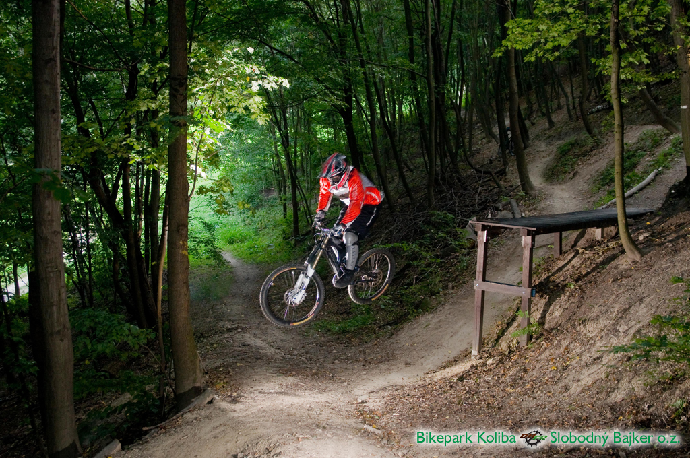
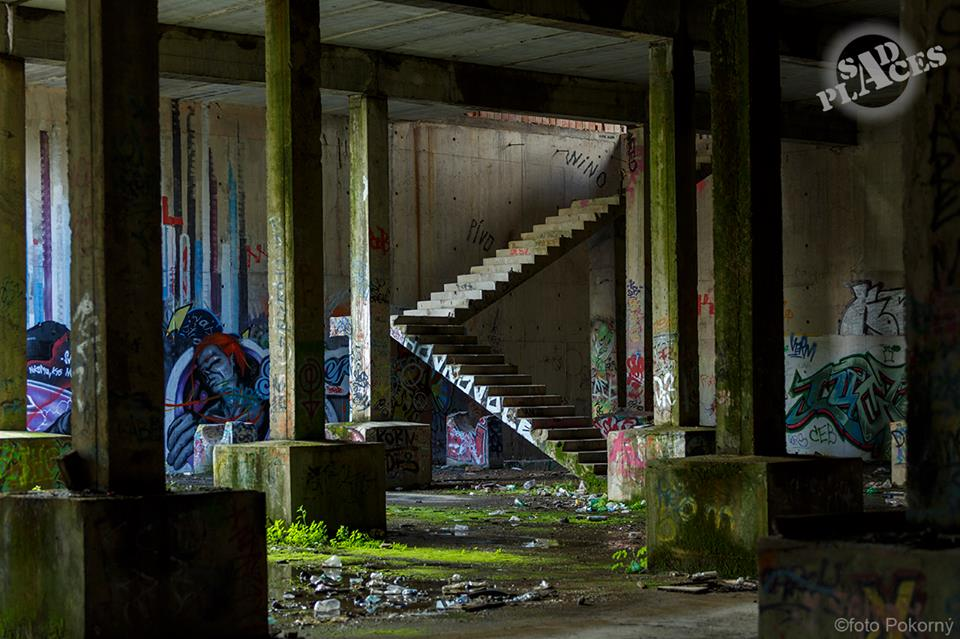
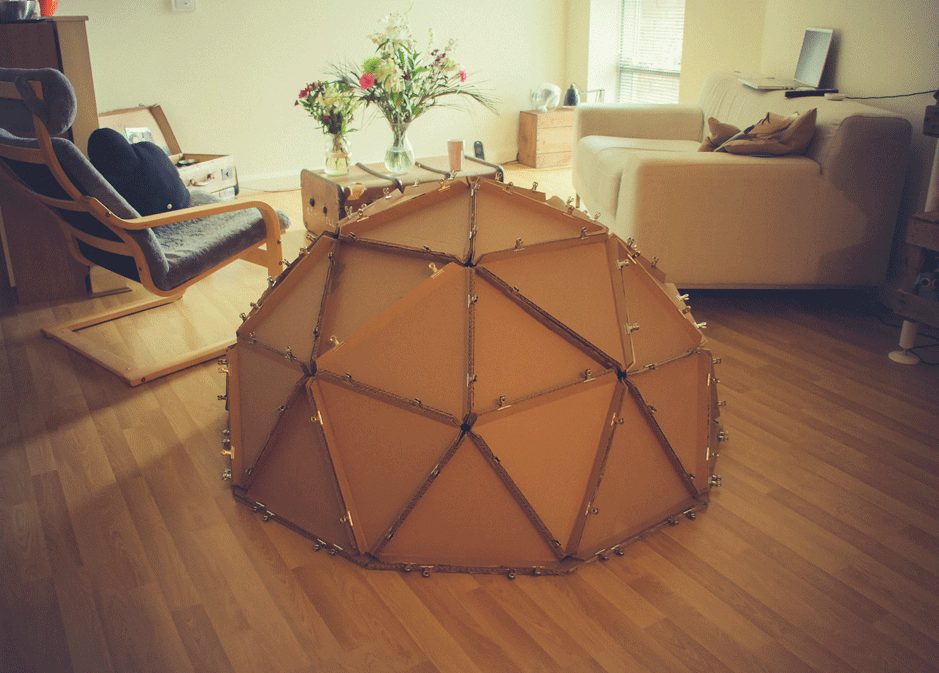
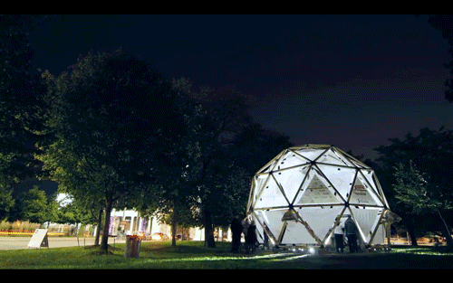
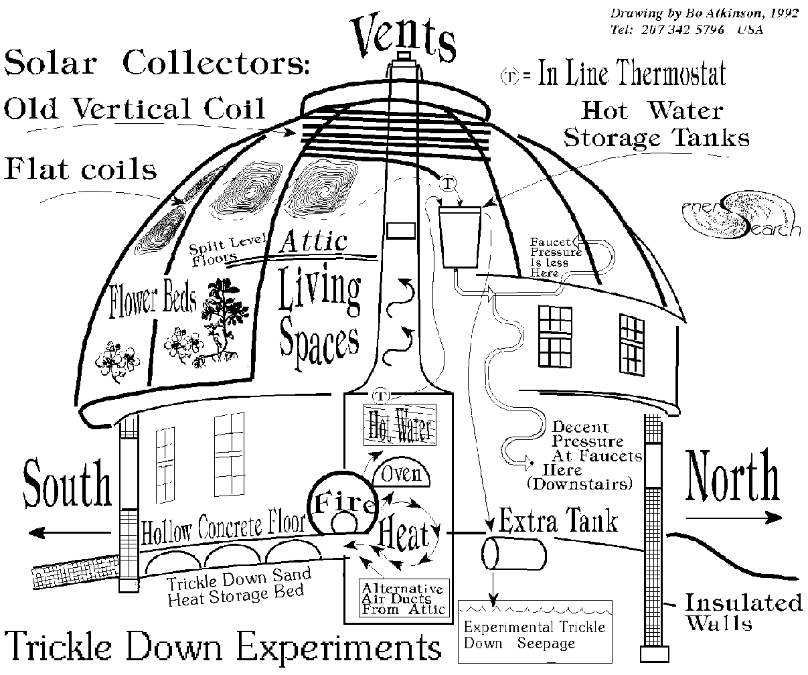
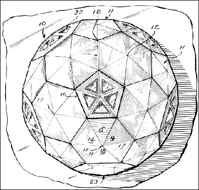
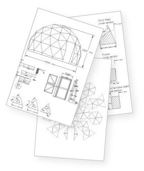

HackerDome.xyz || #hackerdome
Hackerdome will be one of very first true hackerhouse residency (coliving)
Located in Central Europe, Bratislava, Slovakia
Affiliated with local hackerspace Progressbar
Now WorkInProgress, opening 2016/2017, but contact me for beta-run
Features
- Fast Internet (500Mbit/30Mbit)
- IPFS local nodes
- Tor relays
- anonymous encrypted exits to internet
- Free
- Club-Mate (20mg/100ml)
- Flora-Power (18mg/100ml)
- Nootropics (??? :D)
- Synectar.sk (local soylent)
- Full-stack kitchen
- Located near woods
- Pet-friendly space
- Shared (e)car & (e)bike (e part is planned)
- Near is community garden
Trips locations near hackerdome





- Unfinished waterworks from 1970 over the Old Lamač at the place of former quarry (15mins walk)

- Rocket military base built in 80ties of the 20th century. (~40mins bike)
- Top of Devínska Kobyla. Its peak elevation is 514 m AMSL
- rocket system ground – air S 125 Neva, known as SA-3 GOA.
System was developed by company Lavočkin & Gruškin OKB and manufactered by Fakel MKB.
- 20 objects in area

Goodies
- Tesco 24/7 (5min bike)
- Gas station 24/7 (5min bike)
- McDonalds 24/7 (5min bike/2min car)
- Kaufland 7-22 (10min walk)
Equipment
- Standing desk Skarsta
- Lot of pallets (let's build something?!)
City Transportation
Cities near
- Vienna, Austria (1 hour by car/train)
- Brno, Czech Republic (1 hour by car/train)
- Budapest, Hungary (2 hours by car/train)
- Prague, Czech Republic (3 hours by car/train)
Options to stay
Micro-term
- staying for like hackercouch, 1-3 days
- just support us buying club-mate at place, you are welcome!
Mid-term
- Plan to stay for 1-12 weeks, great! :)
- Get in touch with local community
Long-term
- 12+ weeks
- So you really like Bratislava, noice :)
Do you want in?
We accept payments in Bitcoin, Ethereum and also in analog money.
Who I'm
Founder of Progressbar. It all started before summer 2010 :)
Some clickings
Why Geodesic dome
Authors






Crazy shit in end
BuckMinster Fuller Meets Transformers

If IPFS has some troubles, here is latest revision
{kind=link}